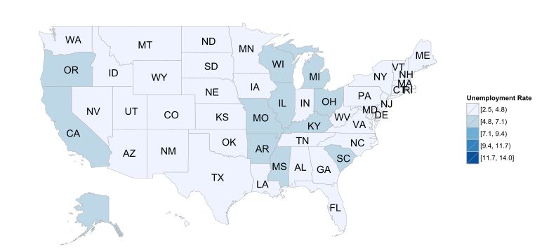
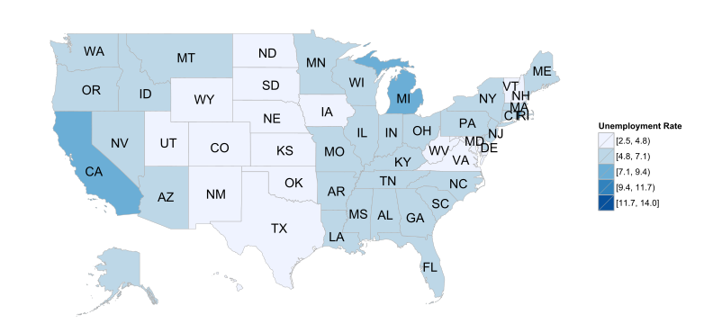
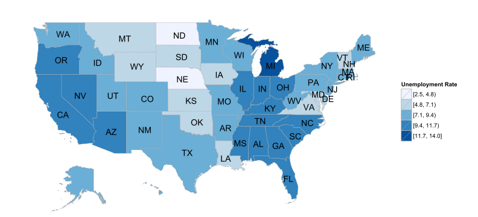
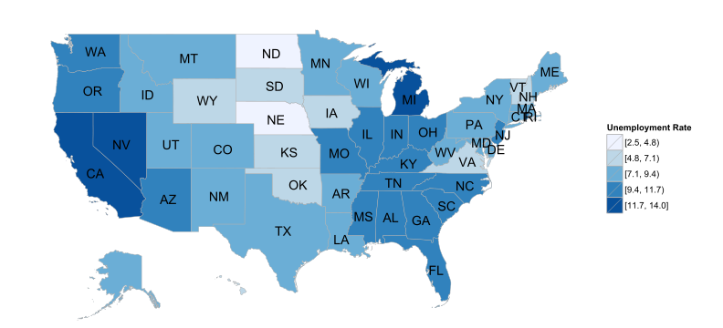

Click the right arrow on your keyboard on use the navigation arrows below to progress through the slides.
PREDICT 455.55
Created by the Art and Music team
I just used some maps I made for last week's assignment -- obviously these aren't for our final project. I also picked some settings - transition style, time between slides -- just to see how they are working. We can change any of these things that we want.
United States Department of Agriculture, Economic Research Service
Here is some explanatory text about this map. It is giving a short analysis of the graphic.
United States Department of Agriculture, Economic Research Service
United States Department of Agriculture, Economic Research Service
United States Department of Agriculture, Economic Research Service
United States Department of Agriculture, Economic Research Service
